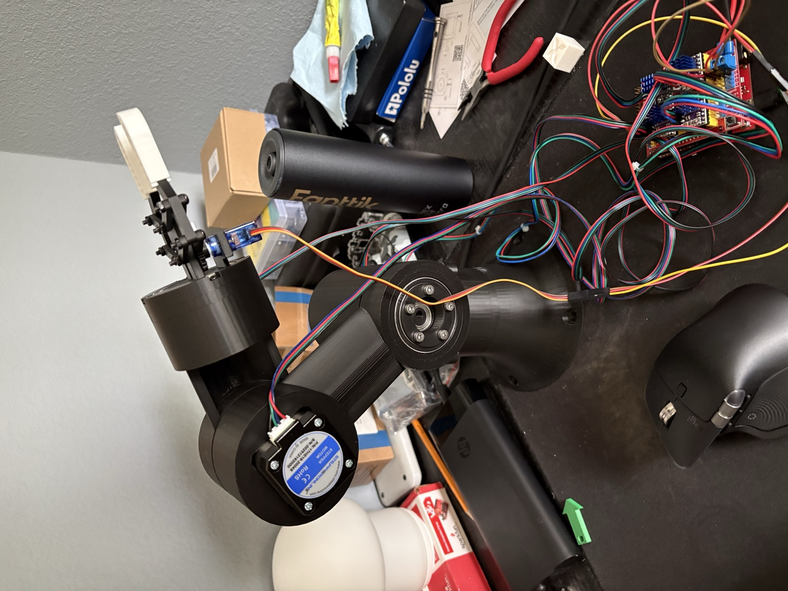
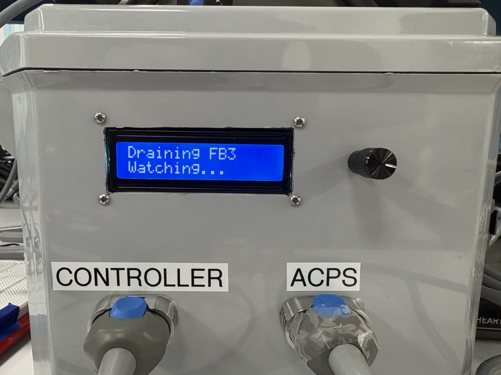

I'm a Mechanical Engineering student at Northeastern (Class of 2028) and a former Systems Engineering Co-op at Abbott Heart Failure. I like projects that combine mechanical design, electronics, and code.

A 3D-printed arm with a 270 mm reach, ~500 g payload, and ~1 mm repeatability for under $200. I also wrote a custom browser GUI for jogging, IK moves, and pick-and-place routes.
View project →
I led a team of 4 co-ops to finish a battery power-cycling test fixture that had been stalled since 2023. We removed the need for an operator, saving an estimated $750K per year.
View project →I study Mechanical Engineering at Northeastern University (GPA 3.9). My coursework includes Dynamics, Fluid Mechanics, Thermodynamics, and Mechanics of Materials. Outside class I work on vehicle dynamics R&D for Northeastern Electric Racing, where I design the steering rack and steering column mounts for our FSAE car.
I most enjoy work where the hardware and the software have to come together. That meant rewriting firmware for a medical-device test fixture at Abbott and designing cycloidal gearboxes for my own robot arm. Away from engineering, I rock climb and play basketball.
I'm open to co-op and internship opportunities in mechanical, robotics, and systems engineering.